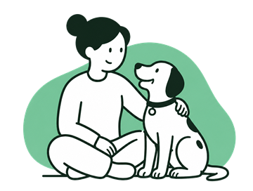
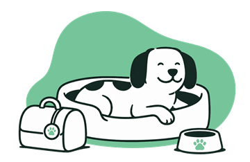

Čuvanje pasa u Beogradu
Pronađi proverenog čuvara u svom delu grada - tvoj pas je u sigurnim rukama dok si na putu.
Već imaš aplikaciju? Otvori aplikaciju
Dve vrste čuvanja - ti biraš

Čuvanje kod vlasnika
Čuvar dolazi kod tebe - pas ostaje u svom domu, u svojoj rutini. Idealno za pse koji se teže navikavaju na novu sredinu. Detalje (obilasci ili duži boravak, hranjenje, šetnje) dogovaraš direktno sa čuvarom.

Boravak kod čuvara
Tvoj pas boravi u domu čuvara dok si odsutan - na primer tokom putovanja ili odmora. Na profilu čuvara vidiš sve bitne informacije: cenu po noći, koliko pasa prima i koje veličine.
Kako funkcioniše
- 1. Preuzmi BARK i izaberi vrstu čuvanja. Čuvanje kod vlasnika ili boravak kod čuvara - plus datumi koji ti trebaju.
- 2. Pregledaj profile čuvara. Vidiš cenu po noći, deo grada, opis, recenzije i da li je profil verifikovan - sve pre slanja zahteva.
- 3. Pošalji zahtev čuvaru koji ti odgovara. Čuvar vidi detalje o tvom psu i prihvata ako mu termin odgovara.
- 4. Dogovorite detalje u poruci. Kada čuvar prihvati, otvara se poruka u aplikaciji - tu se dogovarate o svemu, uključujući i upoznavanje pre čuvanja.
Zašto BARK
- Verifikovani čuvari ✓ Verifikovan - identitet potvrđen ličnim dokumentom.
- Recenzije posle svake usluge - vidiš iskustva drugih vlasnika.
- Cene unapred poznate - po noći, jasno na profilu. BARK ne naplaćuje proviziju.
- Poruke u aplikaciji - dogovor i fotografije tvog psa tokom čuvanja, sve na jednom mestu.
Često postavljana pitanja
Koliko košta čuvanje pasa u Beogradu?
Cenu određuje svaki čuvar i prikazana je po noći na njegovom profilu, pre slanja zahteva. BARK ne naplaćuje proviziju - dogovor i plaćanje su direktno između tebe i čuvara.
Koja je razlika između čuvanja kod vlasnika i kod čuvara?
Kod čuvanja kod vlasnika, čuvar dolazi kod tebe - pas ostaje u svom domu i svojoj rutini. Kod boravka kod čuvara, tvoj pas boravi u domu čuvara dok si odsutan. Obe opcije biraš u aplikaciji, a detalje dogovaraš direktno sa čuvarom.
Da li su čuvari provereni?
Čuvari mogu da verifikuju identitet ličnim dokumentom i tada dobijaju oznaku verifikovanog profila. Pored toga, posle svake usluge vlasnici ostavljaju recenzije koje su vidljive svima.
Kako da rezervišem čuvanje psa?
Preuzmeš BARK aplikaciju, izabereš vrstu čuvanja i datume, pregledaš profile dostupnih čuvara sa cenama i recenzijama, i pošalješ zahtev čuvaru koji ti odgovara. Kada čuvar prihvati, detalje dogovarate u poruci unutar aplikacije.
Da li mogu da upoznam čuvara pre čuvanja?
Da. Nakon što čuvar prihvati zahtev, otvara se poruka u aplikaciji gde možete da se dogovorite o upoznavanju pre početka čuvanja.
U kojim gradovima radi BARK?
Trenutno BARK radi samo u Beogradu. Planiramo proširenje na ostale gradove.
Treba ti i šetač?
BARK nije samo čuvanje - pronađi i proverenog šetača u svom delu grada.
Imaš pitanje? Piši nam na podrska@barkapp.rs